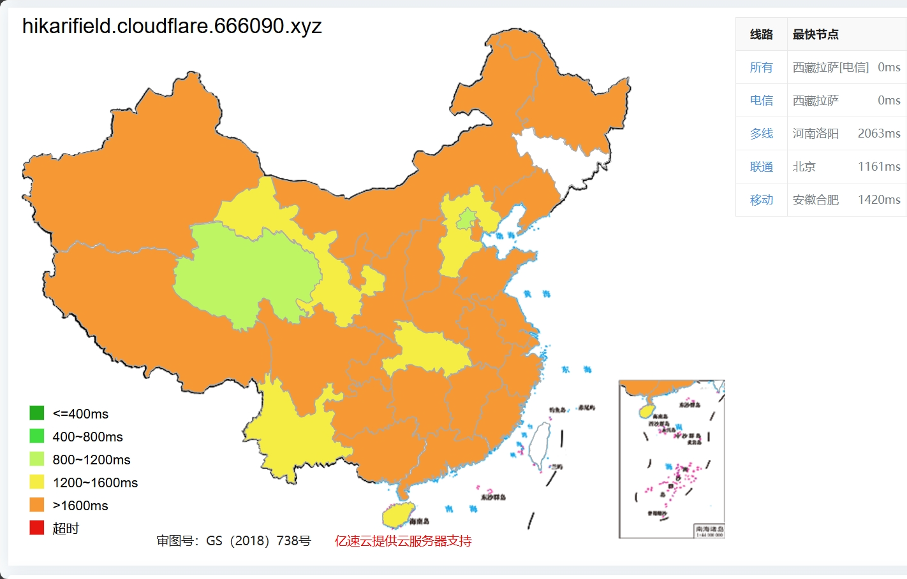
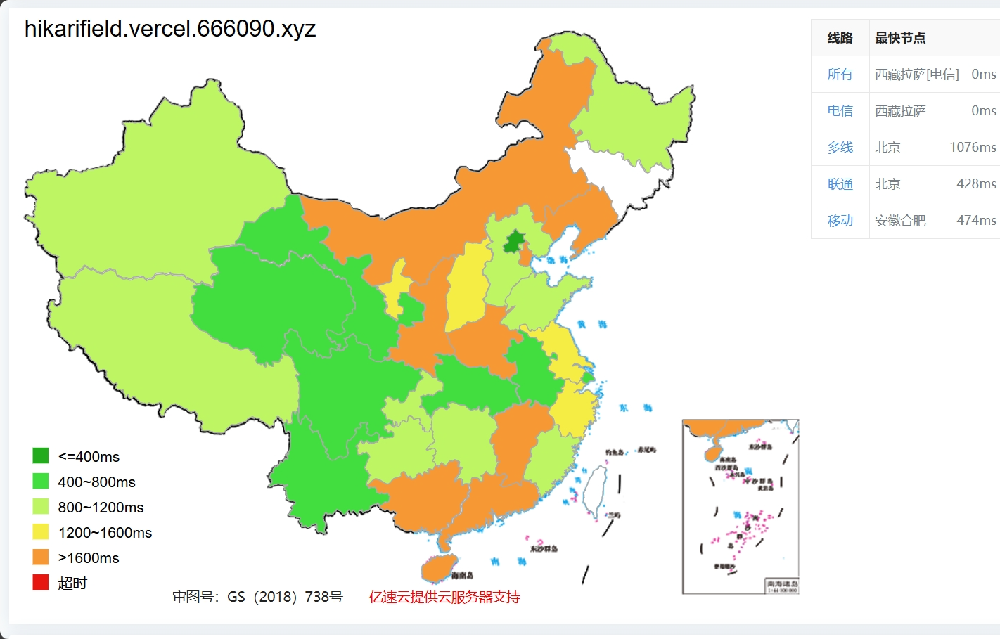
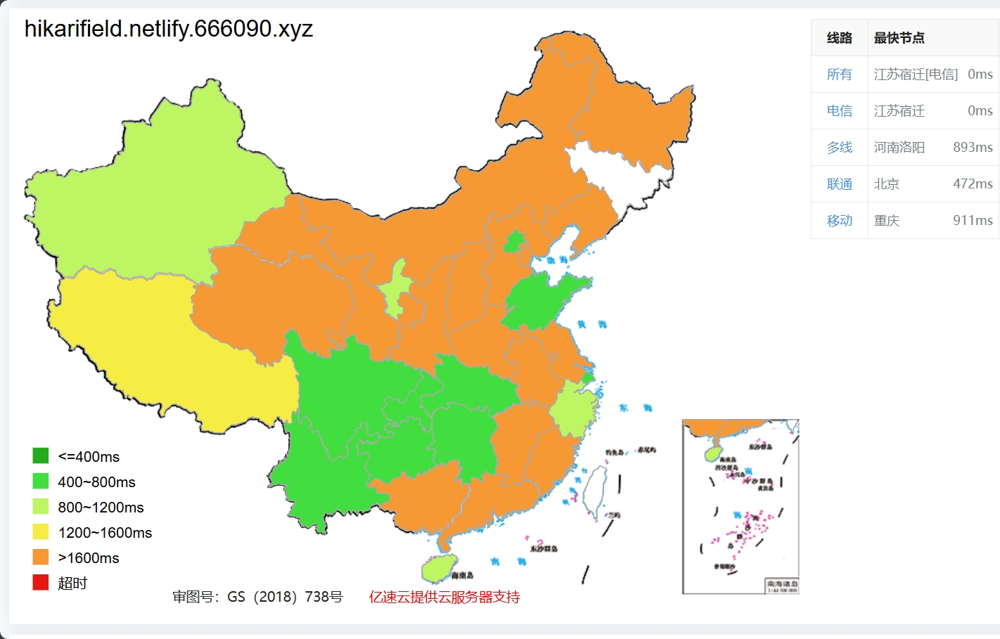

欢迎访问HIKARIFIELD Helper(Beta)!!!
正在为您检测HIKARIFIELD Helper服务器响应速度...
系统将在5-15秒内为您连接到响应速度最快的服务器。
您也可以在下方手动选择服务器。
服务器列表：
默认服务器：CloudFlare
服务商：CloudFlare;服务器：CloudFlareCDN
地址：
http://hikarifield.cloudflare.666090.xyz/galgame

优点：除了速度不是最优，其他都是神！
缺点：想要获得最佳访问速度需要访问者具备一定相关知识
服务商：Vercel;服务器：AWS-AGA
地址：
https://hikarifield.vercel.666090.xyz/hikarifield/galgame.html

优点：大陆电信访问速度快
缺点：月流量限制100GB，大陆移动/联通速度较为拉跨
服务商：Netlify;服务器：DO+AWS
地址：
http://hikarifield.netlify.666090.xyz/galgame

优点：大陆电信访问速度快
缺点：月流量限制100GB，大陆移动/联通速度较为拉跨